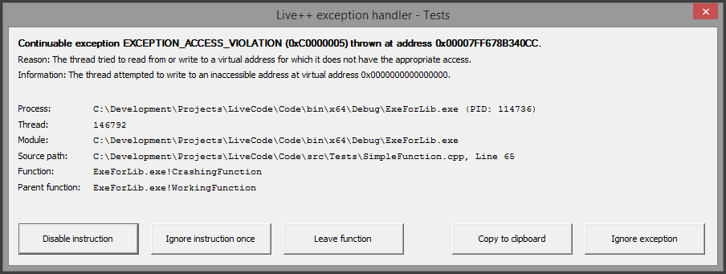

Quickstart guide
If you want to try Live++ in one of your projects straight away and deal with the details later, simply follow these steps:
- Make sure the API, x64 and x86 folders are stored in a location relative to your project.
- Set up compiler options and linker options for your project.
- Load the Live++ DLL, check for possible version mismatches, register a process group, and enable Live++ for all loaded modules using the following code:
- Modify source files, save them, and hit ctrl + alt + F11 to invoke Live++.
#include "pathToLivePP/API/LPP_API.h"
int main(void)
{
// load the Live++ DLL, check for version mismatch, and register process group
HMODULE livePP = lpp::lppLoadAndRegister(L"pathToLivePP", "Quickstart");
// enable Live++
lpp::lppEnableAllCallingModulesSync(livePP);
// enable Live++'s exception handler/error recovery
lpp::lppInstallExceptionHandler(livePP);
// run the main loop
// ...
return 0;
}
Installation
No installation as such is needed to work with Live++. Live++ is completely self-contained - just copy the whole directory tree to any location on your hard drive. Of course you can also submit all Live++-related files to version control.
Directory structure
Following is the directory structure of a Live++ build:
-
APIC and C++ API
- LPP_API.hStandalone header file that includes the Live++ API
- LPP_ForceLinkStaticRuntime.hStandalone header file needed when linking against the static C/C++ runtime
- LPP_VS*.hOptional helper files needed by LPP_ForceLinkStaticRuntime.h
- docsThis documentation
-
x6464-bit related files
- LPP_x64.dllLive++ DLL for 64-bit applications
- LPP_x64.exe64-bit process spawned by the DLL
- dbgcore.dll64-bit helper DLL used by the Live++ process
- dbghelp.dll64-bit helper DLL used by the Live++ process
- msdia140.dll64-bit helper DLL used by the Live++ process
- symsrv.dll64-bit helper DLL used by the Live++ process
-
x8632-bit related files
- LPP_x86.dllLive++ DLL for 32-bit applications
- LPP_x86.exe32-bit process spawned by the DLL
- dbgcore.dll32-bit helper DLL used by the Live++ process
- dbghelp.dll32-bit helper DLL used by the Live++ process
- msdia140.dll32-bit helper DLL used by the Live++ process
- symsrv.dll32-bit helper DLL used by the Live++ process
- LPP_EULA.pdfEnd User License Agreement
- LPP_Activate_License (.exe & .txt)Command-line tool for activating licenses plus documentation (not available in Trial versions)
- LPP_Deactivate_License (.exe & .txt)Command-line tool for deactivating licenses plus documentation (not available in Trial versions)
- LPP_Validate_License (.exe & .txt)Command-line tool for validating licenses plus documentation (not available in Trial versions)
Project setup
Live++ does not require any special project setup, except for a few compiler and linker settings. It is perfectly fine to use both static libraries (.lib) and dynamic libraries (.dll) in your solution. Live++ will automatically extract the needed information from all object files and executables involved.
Compiler settings
The following is a list of compiler settings that need to be enabled in the configuration properties for each project used with Live++:
C/C++ -> General -> Debug Information Format -> C7 compatible (/Z7) or
C/C++ -> General -> Debug Information Format -> Program Database (/Zi)
C/C++ -> Code Generation -> Create Hotpatchable Image -> Yes (/hotpatch) - x86 only; implicit and not required for x64
C/C++ -> Code Generation -> Enable Minimal Rebuild -> No (/Gm-) - only needed for automatic splitting of amalgamated/unity files
Note
Even though not strictly necessary, we recommend using both /Gy (Enable Function-Level Linking) as well as /Gw (Optimize Global Data) compiler options in order to make the patch executable and PDB as small as possible.
Linker settings
The following is a list of linker settings that need to be enabled in the configuration properties for each project used with Live++:
Linker -> General -> Create Hotpatchable Image -> Enabled (/FUNCTIONPADMIN)
Linker -> Optimization -> References -> No (/OPT:NOREF)
Linker -> Optimization -> Enable COMDAT Folding -> No (/OPT:NOICF)
Version-specific settings
In Visual Studio 2015 and earlier, generating a program debug database needs to be enabled as follows:
Linker -> Debugging -> Generate Debug Info -> Yes (/DEBUG) - Visual Studio 2015 and earlier
In versions 15.5.x of Visual Studio 2017, the setting for generating a program debug database is split into two settings which need to be configured as follows:
Linker -> Debugging -> Generate Debug Info -> Generate Debug Information optimized for sharing and publishing (/DEBUG:FULL) or
Linker -> Debugging -> Generate Debug Info -> Generate Debug Information optimized for faster links (/DEBUG:FASTLINK) - Visual Studio 2017, 15.5.x
Linker -> Debugging -> Generate Full Program Database File -> Yes - Visual Studio 2017, 15.5.x
In newer 15.6.x versions of Visual Studio 2017, the last setting mentioned above has been removed. Therefore, the following needs to enabled:
Linker -> Debugging -> Generate Debug Info -> Generate Debug Information optimized for sharing and publishing (/DEBUG:FULL) - Visual Studio 2017, 15.6.x
Incompatible settings
There are certain settings which Live++ is incompatible with:
C/C++ -> General -> Optimization -> Whole Program Optimization - object files built using Link Time Code Generation store information in an unsupported proprietary format
Note
Live++ will automatically detect incompatible compiler and linker settings and output an error accordingly.
Required files
In order to load and reconstruct the necessary information for a module, Live++ needs the following files to be present:
-
PDB files for all Live++-enabled modules.
PDB files contain useful information about executable image sections, public symbols, and translation units and toolchains involved. -
Object files (.obj) that were linked into Live++-enabled modules.
Almost all of the symbol information needed by Live++ is extracted and reconstructed from object files. - Source files (.cpp & .h) used to compile the above-mentioned object files.
Supported setups
Live++ fully supports .exe, .dll, and .lib projects, makefile-based projects, and custom setups and build systems. From a technical point of view, Live++ does not care about the type of project. In fact, Live++ does not even know about the project type at all.
Nevertheless, different project types will exhibit different behaviours that can be observed between two Live++ coding sessions:
-
Application (.exe) projects:
Live++ will re-compile .obj files using the original compiler command-line options and generate a patch to be loaded into the address space of the running process, run-time linking against existing symbols. Re-compiled object files will be picked up by the native toolchain automatically between two Live++ sessions, only the executable needs to be linked again. -
Dynamic library (.dll) projects:
Similar to application projects, individual .obj files will be re-compiled. The .dll will be linked again by the native toolchain automatically between two Live++ sessions. -
Static library (.lib) projects:
Similar to application projects, individual .obj files that are part of a .lib file will be re-compiled. However, Live++ does not link static libraries that contain these .obj files. Between two Live++ sessions, the native toolchain will therefore first link all .lib files containing re-compiled object files and then re-link all applications and dynamic libraries that consume these .lib files. -
Makefile-based projects:
Similar to any of the above, depending on what the makefile contains. -
Custom setups and build systems:
Similar to any of the above, depending on what is built using your setup.
Note
In addition to Visual Studio, Live++ has also been tested with FASTBuild, IncrediBuild, SN-DBS, various in-house (distributed) build systems, and build systems used by other IDEs. Depending on how your build is structured, there might be some settings that need to be configured first in order to make Live++ find all files and toolchains involved.
FASTBuild
When using distributed compilation, FASTBuild will copy the compiler executable and all required auxiliary files to a remote machine, start the compilation process on the remote machine, and copy the output back to the machine that initiated the build. In this case, the PDB file that is used by Live++ in order to find the compiler and linker executables will contain paths on remote machines, e.g. C:\Users\Jane\AppData\Local\Temp\.fbuild.tmp\worker\toolchain.130589cdf35aed3b\cl.exe.
Because this path is not available when re-compiling files using Live++, you need to make use of the "Override compiler path" setting and tell Live++ where a local compiler can be found.
IncrediBuild
When using distributed builds in conjunction with precompiled header files, IncrediBuild may generate several individual PDBs (e.g. C:\Project\SourceFile_cpp_ib_1.pdb, C:\Project\SourceFile_cpp_ib_2.pdb, etc.) that all use the same precompiled header (e.g. C:\Project\PCH.pch) that was built against a different PDB. This is - strictly speaking - not allowed or supported by Microsoft's compiler toolchain, and will lead to Live++ yielding error C2858 when trying to re-compile.
In this case, you need to make use of the "Force use of PCH PDBs" setting in order to force Live++ to use the same PDB as the corresponding PCH when re-compiling files.
Usage
Using Live++ is very simple: change any of the source files which are part of a running application or DLL, save the changes, and press the Live++ shortcut ctrl + alt + F11.
Loading the Live++ DLL
Depending on whether your application is a 32-bit or 64-bit application, you have to load either "x86\LPP_x86.dll" or "x64\LPP_x64.dll", respectively. This is done by using the Win32 LoadLibrary function. After having loaded the DLL, you need to register a process group with Live++ using the lppRegisterProcessGroup(HMODULE livePP, const char* const groupName) function.
Alternatively, you can use the lppLoadAndRegister(const wchar_t* pathWithoutTrailingSlash, const char* const groupName) function provided by the API as shown in the following example. This will automatically load the correct DLL based on the architecture's bitness, do a version check internally, and register a Live++ process group.
#include "pathToLivePP/API/LPP_API.h"
int main(void)
{
// load the Live++ DLL, check for version mismatch, register process group
HMODULE livePP = lpp::lppLoadAndRegister(L"pathToLivePP", "AGroupName");
// ...
// run the main loop
// ...
return 0;
}
In any case, hold on to the returned HMODULE to make use of the API.
Note that there is no need to start either LPP_x86.exe or LPP_x64.exe manually - the correct executable is automatically spawned when loading the Live++ DLL and registering a process group.
Process groups
Process groups enable single-machine, multi-process live coding, where several processes belonging to the same process group communicate and synchronize with the same Live++ instance. Each uniquely named process group will spawn a unique Live++ instance that automatically synchronizes all processes belonging to the same group. This supports scenarios where a single Live++-enabled application is spawned multiple times, but all application instances should be updated simultaneously in a synchronized manner.
Modules are identified by their image headers, which means that Live++ will automatically identify binary identical modules, even though they might have been launched under a different name in a different path.
Note
Process group names need to follow a certain naming convention, where any of the following characters is considered invalid and will be replaced with an underscore automatically: \ / * ? " < > | : ; , .
The following example illustrates how process groups could be used:
- An asset pipeline application uses Live++ and registers a process group named "AssetPipe".
- The same asset pipeline application is started several times to get the most out of multi-core machines.
- The application that is first started will detect that no Live++ instance handling this process group is currently running, and will therefore spawn a new Live++ instance, now taking care of processes registered to the group "AssetPipe".
- All subsequently started applications will connect to the already running Live++ instance.
- Whenever code that is part of the asset pipeline application needs to be re-compiled, compilation is only done once, but patched into all running processes in a synchronized manner.
Another example of where process groups are very helpful are client/server applications that can either run as client or as server on the same machine. As long as client and server use the same executable, both can register to the same process group and be patched simultaneously. This has the advantage that changed code only needs to be re-compiled once.
Of course, having different executables for client and server is also supported, but each application then needs to be registered to a different process group (e.g. "Client" and "Server"). This would spawn two different Live++ instances, with one taking care of client-code re-compiles and patches, and the other taking care of server-code re-compiles and patches.
Finally, if you don't plan on using Live++ for multi-process live coding, simply use e.g. the name of your project when registering a process group, and don't worry about any of the above.
Enabling Live++
After loading the DLL and registering a process group, you have to tell Live++ for which modules it should be enabled. There are several API options available to do so:
| API | Description |
|---|---|
lppEnableAllCallingModulesSync(HMODULE livePP);lppEnableAllCallingModulesAsync(HMODULE livePP);
|
Enable Live++ for the calling module (EXE or DLL) and all its import modules (DLLs). This is the most straightforward choice that enables Live++ for pretty much everything, no matter the project setup. |
lppEnableAllModulesSync(HMODULE livePP, const wchar_t* const nameOfExeOrDll);lppEnableAllModulesAsync(HMODULE livePP, const wchar_t* const nameOfExeOrDll);
|
Enable Live++ for the given module (EXE or DLL) and all its import modules (DLLs). This is the same as above, but allows specifying a module path manually (which need not be the calling one). |
lppEnableCallingModuleSync(HMODULE livePP);lppEnableCallingModuleAsync(HMODULE livePP);
|
Enable Live++ for the calling module (EXE or DLL) only, but not its import modules. This is useful for e.g. LIB-based projects/solutions that don't care about 3rd-party DLLs, or for single DLLs like plug-ins or Unreal Engine projects. |
lppEnableModuleSync(HMODULE livePP, const wchar_t* const nameOfExeOrDll);lppEnableModuleAsync(HMODULE livePP, const wchar_t* const nameOfExeOrDll);
|
Enable Live++ for the given module (EXE or DLL) only, but not its import modules. This is the same as above, but allows specifying a module path manually (which need not be the calling one). |
Important
When working with DLLs, it is crucial to never call any of these APIs in your DllMain entry point.
Live++ needs to perform a few operations that are not supported by the operating system while DLLs are being loaded, which could lead to a deadlock.
All of the above APIs are available in both asynchronous as well as synchronous flavors. The asynchronous variants hand the call to the Live++ DLL and immediately return with a token that can be waited upon using lppWaitForToken(HMODULE livePP, void* token). The synchronous variants are just small wrappers that use the asynchronous operations internally and then wait on the token.
The following is a full C++ example of loading and enabling Live++ for the main executable and all its import DLLs:
#include "pathToLivePP/API/LPP_API.h"
int main(void)
{
// load the Live++ DLL
#if _WIN64
HMODULE livePP = ::LoadLibraryA("pathToLivePP/x64/LPP_x64.dll");
#else
HMODULE livePP = ::LoadLibraryA("pathToLivePP/x86/LPP_x86.dll");
#endif
// enable Live++
lpp::lppRegisterProcessGroup(livePP, "AGroupName");
lpp::lppEnableAllCallingModulesSync(livePP);
// run main loop
while (runMainLoop)
{
lpp::lppSyncPoint(livePP);
OnLoop();
}
::FreeLibrary(livePP);
return 0;
}
Hint
Even if not strictly necessary, it is recommended to enable Live++ as early as possible in your application, ideally right at the start of your main entry point. This allows the process that is spawned by the Live++ DLL to start loading and analyzing your files concurrently to your application, maximizing startup performance. Even on AAA-sized projects, the performance impact on the host application should be minimal.
Note that Live++ reads and analyzes files in any of the lppEnable* API calls, but the time at which you call these APIs is totally up to you. If you feel that enabling Live++ takes longer than usual on your machine (e.g. due to very large PDBs or non-SSD drives) and you don't want to pay the price at each application startup, it is perfectly fine to load Live++ only when you are going to need it.
In this case, you might find it beneficial to only load and enable Live++ using a keyboard shortcut, an in-game console, a debug menu, or similar.
Should you need to unload DLLs at runtime using the Win32 FreeLibrary function, you can use any of the available
lppDisable* API calls to make Live++ forget about previously enabled modules, as illustrated in the following example:
void LoadDll(void)
{
// ...
HMODULE pluginDll = ::LoadLibrary(pathToDLL);
lpp::lppEnableAllModulesSync(livePP, pathToDLL);
// ...
}
void UnloadDll(void)
{
// ...
lpp::lppDisableAllModulesSync(livePP, pathToDLL);
::FreeLibrary(pluginDll);
// ...
}
Compiling modified sources
After modifying any source code files, save them and press ctrl + alt + F11. This shortcut works regardless of whether the Live++ application currently has focus or not.
The shortcut triggers the background compilation process, and - if compilation was successful - loads the new code into your application, linking it against existing code. Of course you can use functions which are not part of the original executable and they will be linked in properly as well.
Note
Source code files are compiled using the original toolchain with the exact same compilation options. This means that once you end a Live++ session, modified files don't have to be re-compiled - their corresponding object files are already up-to-date and will be picked up by your build system, further reducing compile times between sessions.
Hint
Compiler and linker output is always logged to both the Log tab in the Live++ UI as well as Visual Studio's output window. This enables you to go to the location of an error by either double-clicking on the line in Visual Studio's output window or by hitting F8.
Choice of runtime
Live++ supports both linking against the dynamic runtime (/MD and /MDd compiler switches) as well as the static runtime (/MT and /MTd compiler switches).
In case your modules link against the dynamic runtime, there is nothing you have to do.
If your modules link against the static runtime, Live++ needs to ensure that all individual object files that are part of the static runtime are pulled into your module. This is easily achieved by including LPP_ForceLinkStaticRuntime.h in any of your .cpp files that is part of the module(s) in question, as shown in the following example:
#include "pathToLivePP/API/LPP_ForceLinkStaticRuntime.h"
int main(void)
{
// ...
return 0;
}
Note that it does not matter whether you include LPP_ForceLinkStaticRuntime.h in an existing .cpp file or create a new one just for the purpose of including this file. The important thing is that the compiler sees the #pragma comment(linker, "/INCLUDE:SymbolName") statements caused by including LPP_ForceLinkStaticRuntime.h when compiling your module. How you accomplish these statements to be "seen" by the compiler is up to you. LPP_ForceLinkStaticRuntime.h will automatically pull in the correct helper file that emits these statements, depending on your compiler's version (_MSC_VER), architecture (x86 vs. x64), and pre-processor macros (_DEBUG).
Amalgamated/unity files
Live++ will automatically detect and split amalgamated/unity/fusion/blob files which are part of any registered module.
For each such unity file, Live++ will split all included .cpp files into their own .obj file and use these for reconstruction and re-compilation, as shown in the following example:
// these are the contents of Unity1.cpp:
#include "FileA.cpp"
#include "FileB.cpp"
#include "FileC.cpp"
In order to offer the best possible performance across Live++ sessions, Live++ will also store small dependency databases (.ldb files) next to each of these .obj files, e.g. Unity1.lpp_part.FileA.ldb. Using these databases, Live++ can automatically determine which files need to be split and which ones are still up-to-date. This means that splitting of unity files only has to be done once - even across sessions - as long as the unity file itself does not change any of its includes. This is explained in the following example:
- The application is started for the first time
- FileA is touched for the first time
- Live++ splits Unity1.cpp and compiles FileA.cpp, FileB.cpp, FileC.cpp
- FileA is touched
- Live++ compiles FileA.cpp
- The application is closed and started again
- FileA is touched
- Live++ splits Unity1.cpp and compiles only FileA.cpp
Note
In order to use this feature it must be enabled via the corresponding UI setting first. Furthermore, the compiler option /Gm (Enable Minimal Rebuild) must be disabled.
External build systems
By default, Live++ picks up modified source files, compiles them into the corresponding .obj files, and links those changes into the running code. If you don't want Live++ to compile your changes, but rather do this yourself using your own external build system, then Live++ offers an API for that as well:
LPP_API void lppUseExternalBuildSystem(HMODULE livePP);
When working in this mode, you probably want to make use of another API that manually tells Live++ to pick up any changes it can find, as outlined in the following example:
- Your application listens to a keyboard shortcut, or has any other means of triggering a build using your own external build system.
- Your application tells the external build system to compile all changes.
- The external build system tells your application that all files have finished compiling.
- Your application invokes Live++ manually in order to pick up all changed .obj files.
- Live++ links all changed .obj files against the running application.
Note
lppUseExternalBuildSystem(HMODULE livePP) has to be called before registering a process group - the mode of operation cannot be changed afterwards. The UI log shows which mode Live++ is operating in.
Halted processes
Normally, Live++ will automatically gather modified files and start compilation in the background as soon as the Live++ shortcut is invoked. However, when a Live++-enabled process is halted in the debugger (e.g. on a breakpoint), the process does not make any progress, so Live++ cannot communicate with it.
In this case, the UI log will read "Waiting for client(s), hit 'Continue' (F5) if being held in the debugger" upon pressing the shortcut. Simply resume your application and Live++ will compile and install any changes you made. Your process will still not execute new instructions until compilation is finished, but is instead put in a mode where communication with Live++ can continue. Once patches have been installed by Live++, your process will automatically continue execution.
The full sequence of events is outlined below:
- The debugger encounters a breakpoint and halts the process.
- Debugging commences as usual.
- You make one or several changes to the code currently being debugged/executed and invoke Live++ by pressing the shortcut.
- Live++ picks up modified files and waits for you to continue the process in the debugger.
- You continue the process e.g. by pressing F5.
- Your process is still halted, but this time by Live++.
- Live++ compiles your changes, installs all patches and lets your process continue.
- Your process continues execution where it left off.
Note
In this scenario, Live++ does not call any hooks or synchronization points you might have installed, because that could lead to a deadlock.
Error recovery
Live++ offers powerful error recovery out-of-the-box via a custom Vectored Exception Handler (VEH) that uses Structured Exception Handling (SEH) behind the scenes. Paired with the live coding capabilities of Live++, this often allows graceful recovery from otherwise fatal errors such as access violations, division by zero, etc.
In order to make use of this facility, the corresponding API that installs the exception handler needs to be used:
LPP_API void lppInstallExceptionHandler(HMODULE livePP);
Once the exception handler has been installed, every time a process raises an unhandled exception (e.g. caused by an access violation), it will invoke this handler. The handler itself will open a dialog that lets you decide how to deal with this exception.

Module, source, and function information is populated asynchronously for foreign symbols, making use of Microsoft's symbol servers located at https://msdl.microsoft.com/download/symbols. These symbols are cached locally at %LocalAppData%\Live++\Symbols.
The options offered by the exception handler are as follows:
-
"Disable instruction":
Completely disables the faulting machine instruction. This is a useful option if the exception comes from one of your own modules/source files that can be re-compiled, but should never be used for e.g. 3rd-party code like the Visual Studio runtime or similar. -
"Ignore instruction once":
Ignores the faulting machine instruction once. The next time the corresponding function is called, the instruction will cause the same exception unless the code has been re-compiled in the meantime. -
"Leave function":
Leaves the current function, continuing execution at the parent function. Additionally, if full SEH information is available, the stack will be unwound and local variables will have their destructors called. -
"Copy to clipboard":
Copies the exception information to the clipboard so that it can be pasted into other applications. -
"Ignore exception":
Ignores this exception once. This hands the exception to the next installed exception handler, if any. After the last installed exception handler had a chance to handle the exception, the process will either stop in the debugger if one is attached, or terminate.
While the exception handler dialog is shown, you can change and re-compile code using Live++ as usual. Even though new code will be installed in the background, process execution has to continue at the point of failure, so you still have to decide how the exception should be handled.
In case a debugger is attached to the process, it will always get the first chance to handle an exception - this is ensured by the operating system. Continuing the process in the debugger will invoke Live++'s exception handler.
Note
In this scenario, Live++ also does not call any hooks or synchronization points when re-compiling code, because that could lead to a deadlock.
Hint
In order to make SEH information available in your executable, you need to enable the following compiler setting:
C/C++ -> Code Generation -> Enable C++ Exceptions -> Yes with SEH Exceptions (/EHa)
SEH information is only required to unwind the stack when leaving the current function. The exception handler works fine without any exception information at all, but stack unwinding will not be performed in that case.
On x86, enabling exceptions incurs runtime overhead and an increase in executable size.
On x64, the exception handling mechanism is quite different and should not cause any measurable runtime overhead. It still causes an increase in executable size though.
Licensing
Activation
Before you can use Live++, you first need to activate a license for your machine. In order to do this, navigate to "License" in the Live++ menu and choose "Activate online". This will bring up a dialog where you need to enter the activation code given to you, as well as any kind of user ID. The latter is only used as a means of identification should you ever have to deactivate a license offline, e.g. because your machine was re-installed without deactivating an existing license first.
After pressing "Activate" in the dialog, Live++ will try to contact the activation server using the data entered by you. If the given activation code is valid, Live++ will generate a license that is tied to your machine and can only be used by you. In all other cases, an error will be displayed instead.
Please contact support should you run into problems connecting to the activation server due to company firewalls or proxy servers.
Note
License activation is only available in the full version of Live++.
Deactivation
Should you need to deactivate a license, e.g. because your computer needs to be re-installed or you want to retire a license so that one of your co-workers can use it, navigate to "License" in the Live++ menu and choose "Deactivate online". This will deactivate your license on the activation server.
Note
License deactivation is only available in the full version of Live++.
Command-line tools
As an alternative to the above, you can use the command-line tools in order to automate license activation, deactivation, and validation. Please consult the corresponding documentation files LPP_Activate_License.txt, LPP_Deactivate_License.txt, and LPP_Validate_License.txt for more information about how to use these tools.
Note
The command-line tools are only available in the full version of Live++.
UI settings
Live++ offers a few settings that let you customize its appearance and behaviour, while other settings are designed to support certain build systems or help with reporting bugs.
General
Live++ always stores its settings into .ini files, and keeps separate files for the x86 and x64 versions. Those are named LPP_x86.ini and LPP_x64.ini, respectively. Inside these .ini files, settings are grouped on a per-process group basis. As an example, LPP_x64.ini could store settings for two registered process groups MyProject and UE4, and look like the following:
[MyProject] initial_window_mode=1 show_full_path_in_title=0 show_path_first_in_title=0 [UE4] continuous_compilation_enabled=1 continuous_compilation_path=C:\Development\Unreal Projects\MyProject\Source continuous_compilation_timeout=100
Additionally, Live++ knows two kinds of setting files:
- Project setting file: This optional file is stored in the same directory as the Live++ executable.
- User setting file: This file is stored in the %LocalAppData%\Live++ directory and will be created by Live++ automatically.
This allows team leads to set up required settings for their project once, copy them to the project setting file, and submit that file into version control alongside the Live++ executables and API. Every team member working with Live++ will then automatically have the correct required settings applied.
This is outlined in the following example:
- Assume an imaginary project needs virtual drives to be set up in order to make Live++ find all files involved in the build.
- The team lead or the person responsible for setting up the project initially configures Live++ and sets the virtual drive options accordingly.
-
The person in charge then copies the setting file from e.g. %LocalAppData%\Live++\LPP_x64.ini into the Live++ directory, e.g. pathToLPP\x64, opens the file, and only leaves the virtual drive settings while removing the rest:
[ImaginaryProject] virtual_drive_letter=Z: virtual_drive_path=C:\MyPath
-
Finally, this .ini file at pathToLPP\x64\LPP_x64.ini is submitted into version control, so every team member will automatically benefit from the correct settings. When launching Live++, the UI will log how many settings were loaded from which file, e.g.:
Loaded 2 project setting(s) from C:\Development\ImaginaryProject\LivePP\x64\LPP_x64.ini Loaded 33 user setting(s) from C:\Users\JaneDoe\AppData\Local\Live++\LPP_x64.ini
Appearance
-
"Initial window mode":
Lets you choose whether Live++ starts minimized, maximized, or normal. -
"Show full path in title" and "Show path first in title":
Allow you to customize how the window title is displayed.
Behaviour
-
"Receive focus on re-compile":
Lets you decide if and under what circumstances Live++ should get focus upon re-compiling. -
"Show notifications on re-compile":
Lets you choose whether you want to receive notifications upon re-compiling. -
"Clear log on re-compile":
Lets you choose whether you want Live++ to clear the log upon re-compiling. -
"Minimize to tray on close":
Lets you decide if you want Live++ to minimize into the system tray when being closed. -
"Play sound on success":
Lets you specify a .WAV file that will be played whenever compilation was successful. -
"Play sound on error":
Lets you specify a .WAV file that will be played whenever compilation has failed. -
"Compile shortcut":
Customize the shortcut that triggers a Live++ re-compile.
Logging
-
"Show undecorated symbol names":
Choose if you want Live++ output to show undecorated names (instead of decorated/mangled names) in warnings and errors.
As an example, this would show 'void __cdecl Function(int)' instead of '?Function@@YAXH@Z'. -
"Enable word wrap for output":
Customize whether you want Live++ output to use word-wrapping. -
"Enable Dev output", "Enable Telemetry output" and "Enable Dev compiland output":
Let you opt-in to logging development and telemetry output into a file, mostly used when reporting bugs.
Compiler
-
"Override compiler path":
Lets you override the compiler path that was found in the PDB, so Live++ will use this compiler instead when re-compiling files. Only needed in rare cases when using custom build systems. -
"Override compiler path only as fallback":
When this is enabled, the override compiler path will only be used if the compiler detected in the PDB is not available. When disabled, Live++ will always use the override compiler path. -
"Use compiler environment":
Lets you decide if Live++ should search for and use the vcvars*.bat compiler environment. Disabling this setting can be useful for custom build systems. -
"Additional compiler options":
Lets you pass additional options to the compiler when creating a patch. Be aware that these options are only passed to the compiler when Live++ re-compiles modified files. As such, this can lead to discrepancies because re-compiled files will not be compiled again by the native toolchain between Live++ sessions. -
"Force use of PCH PDBs":
When this is enabled, it forces Live++ to make each translation unit use the same PDB as the corresponding precompiled header when re-compiling. This is mostly intended as a workaround for compiler error C2858 experienced when using Incredibuild with remote agents and precompiled header files.
Hint
You can either specify a full path to the compiler, e.g. C:\Program Files (x86)\Microsoft Visual Studio 14.0\VC\bin\cl.exe, or a directory, e.g. C:\Program Files (x86)\Microsoft Visual Studio\2017\Community\VC\Tools\MSVC. When only a directory is given, Live++ will automatically attempt to find a suitable compiler in this directory or any of its subdirectories.
Linker
-
"Override linker path":
Lets you override the linker path that was found in the PDB, so Live++ will use this linker instead when building patches. Only needed in rare cases when using custom build systems. -
"Override linker path only as fallback":
When this is enabled, the override linker path will only be used if the linker detected in the PDB is not available. When disabled, Live++ will always use the override linker path. -
"Use linker environment":
Lets you decide if Live++ should search for and use the vcvars*.bat linker environment. Disabling this setting can be useful for custom build systems. -
"Additional linker options":
Lets you pass additional options to the linker when creating a patch. -
"Force linking of weak symbols":
Rarely needed upon request when investigating bug reports.
Hint
You can either specify a full path to the linker, e.g. C:\Program Files (x86)\Microsoft Visual Studio 14.0\VC\bin\link.exe, or a directory, e.g. C:\Program Files (x86)\Microsoft Visual Studio\2017\Community\VC\Tools\MSVC. When only a directory is given, Live++ will automatically attempt to find a suitable linker in this directory or any of its subdirectories.
Continuous compilation
-
"Enables continuous compilation":
When continuous compilation is turned on, Live++ waits for change notifications in the given directory (and its sub-directories) and automatically compiles any changes once the timeout has expired. -
"Directory to watch":
Lets you set the directory that is being watched for changes when using continuous compilation. -
"Timeout (ms)":
When listening for change notifications, Live++ will wait for subsequent changes until the timeout is reached.
Virtual drive
Some build systems temporarily set up a virtual drive when building code, so that all tools used during a build can refer to the same path. However, the PDB files of the compiled modules will then contain paths on this virtual drive, which may no longer be available when starting the application and using Live++. The following settings let you set up a virtual drive that can be used by Live++.
-
"Virtual drive letter":
Lets you specify the letter of the virtual drive that will be mapped to the given path. The letter must be followed by a colon, e.g. Z:. -
"Virtual drive path":
Lets you set the directory that is mapped to the drive letter given above, e.g. C:\MyPath.
Multi-process editing
-
"Install compiled patches":
By default, you can launch several executables and register them at the same process group, but only if no patches have been applied yet. When this setting is enabled, registered modules will automatically load all available patches when registering with a process group. This can be useful when e.g. editing client and server at the same time, while having to restart either of them.
Be aware though that this can lead to divergent state across modules that were loaded after patches were compiled.
Amalgamated/unity files
-
"Split into single parts":
Enables/disables automatic splitting of amalgamated/unity files. -
"Split threshold":
Specifies the minimum number of .cpp files that must be included in an amalgamated/unity file before Live++ attempts to split it, e.g. if the threshold is set to 3, only unity files including 3 or more .cpp files will be split.
API
Live++ is pretty good at figuring things out, but it cannot do magic. The API helps you provide the aid that Live++ needs in order to make certain scenarios work, and ships as a standalone header file that can be used from both C and C++.
Naming convention
In general, all API symbols share a common prefix. All macros begin with LPP_, while functions begin with lpp. In C++, all functions are part of the lpp namespace to further reduce the chance of name clashes.
Versioning
Live++ uses a simple versioning scheme to ensure that the standalone header file and the DLL are never out-of-sync. To achieve this, the header file defines the version of the API it expects to be exported by the DLL, e.g.:
#define LPP_VERSION "1.1.2"
LPP_API const char* lppGetVersion(HMODULE livePP);
LPP_API int lppCheckVersion(HMODULE livePP);
const char* apiVersion = LPP_VERSION;
const char* dllVersion = lpp::lppGetVersion(livePP);
printf("Live++ API version: %s\n", apiVersion);
printf("Live++ DLL version: %s\n", dllVersion);
if (!lpp::lppCheckVersion(livePP))
{
printf("ERROR: Live++ version mismatch detected!\n");
}
Toggling optimizations
When debugging release/optimized builds, it can be extremely helpful to temporarily disable optimizations such as inlining for certain functions or files. The Live++ API provides two simple macros for controlling optimizations:
#define LPP_ENABLE_OPTIMIZATIONS __pragma(optimize("", on))
#define LPP_DISABLE_OPTIMIZATIONS __pragma(optimize("", off))
These macros can be placed anywhere in a source file in the global scope, right before or after function definitions:
LPP_DISABLE_OPTIMIZATIONS
void OptimizedFunction(void)
{
// ...
}
void InlinedFunction(void)
{
// ...
}
LPP_ENABLE_OPTIMIZATIONS
The above example turns off all optimizations for OptimizedFunction and InlinedFunction, which makes it much easier to debug them.
Simply add the statements during a Live++ session, re-compile, debug, and remove the statements afterwards.
Manual recompiles
In certain situations it might be beneficial to manually trigger re-compiles, and Live++ offers an API for that:
LPP_API void lppTriggerRecompile(HMODULE livePP);
lppTriggerRecompile(HMODULE livePP) anywhere in your code and Live++ will behave the same as if the shortcut was pressed, picking up any file modifications automatically.
Synchronization points
Synchronization points can be used to ensure that code patches only happen at a certain point during a frame, e.g. either at the start or end of a frame. This is crucial when having to support structural changes in order to ensure that objects allocated using an old memory layout won't be accessed using new code that expects a different memory layout.
Furthermore, using a synchronization point also makes sure that functions won't be patched mid-frame, which could cause slight behavourial drift between e.g. objects that were updated using the old code and those that were updated using the new code. The following example illustrates this:
void UpdateNumber(float deltaTime, size_t index)
{
g_numbers[index] += 1.0f*deltaTime;
}
void Update(float deltaTime)
{
for (size_t i = 0u; i < numberCount; ++i)
{
UpdateNumber(deltaTime, i);
}
}
Consider what happens when void UpdateNumber(float deltaTime, size_t index) is changed while the loop in void Update(float deltaTime) is currently executing. In this case, a few numbers will have been updated already using the old code, while the rest of the numbers will be updated using the new code. This is probably not an issue in the majority of cases, but if it is, synchronization points will make sure that your process is held at the synchronization point until all code patches are applied.
Synchronization points can be installed using the following API:
lpp::lppSyncPoint(moduleReturnedFromLoadLibraryFunction);
This statement can be put anywhere in your main loop, but it is probably best to put it either at the start or end of the loop.
Internally, installing a synchronization point forces Live++ to do the following:
- Wait until the synchronization point is entered by the application
- Let the application wait inside the synchronization point function
- Apply code patches to the running application
- Let the application exit the synchronization point function
Note
No matter if you use synchronization points or not, the actual patching of executable code is always done in a safe manner by Live++. This means that the CPU will never see an instruction torn into two at the machine code level.
Structural changes
The following is a list of what are considered structural changes:
- Changing the memory layout of a class declaration, which includes:
- adding or removing base classes
- adding or removing non-static data members
- changing the order of non-static data members
- Changing the layout or contents of virtual function tables, which includes:
- adding or removing polymorphic base classes
- adding or removing virtual functions
- changing the order of virtual functions
- changing the signature of a virtual function
Hooks
Data migration can be achieved by using so-called pre-patch and post-patch hooks. A pre-patch hook is a function that is called before a new patch is loaded into the application, while a post-patch hook is a function that is called after a new patch has been loaded. Any function with a signature of void (*)(void) can be registered as a hook.
Registering hooks can be done using the following two APIs:
LPP_PREPATCH_HOOK(functionNameHere);
LPP_POSTPATCH_HOOK(functionNameHere);
Just put the hook statements anywhere in the global scope and they will be called automatically whenever a new patch is successfully compiled and about to be loaded into the running application. You can add as many hooks as you like in whatever translation units you see fit - there is no limit to the number of hooks or files you can put hooks into.
The following is a simplified example of how to do data migration between patches:
void MyOwnPrePatchHook(void)
{
serialization::SerializeAndDeleteObjects(g_allObjects, g_buffer);
}
LPP_PREPATCH_HOOK(MyOwnPrePatchHook);
void MyOwnPostPatchHook(void)
{
serialization::CreateAndSerializeObjects(g_allObjects, g_buffer);
}
LPP_POSTPATCH_HOOK(MyOwnPostPatchHook);
The basic idea is always the same:
- Serialize the data members of existing objects into memory
- Delete the objects
- Re-create the objects using the new class layout
- Serialize the data members from memory to the new objects
Important
It is strongly advised to use a synchronization point to ensure that some objects don't have their memory layout changed while still being used. Keep in mind that objects created on the stack cannot be migrated to a new class layout!
Compile hooks
In addition to pre-patch and post-patch hooks, Live++ also offers hooks that are called when compilation starts, and either succeeds or fails.
Registering these compile hooks can be done using the following three APIs:
LPP_COMPILE_START_HOOK(functionNameHere);
LPP_COMPILE_SUCCESS_HOOK(functionNameHere);
LPP_COMPILE_ERROR_HOOK(functionNameHere);
As the name implies, compile start hooks are called before compilation starts, compile success hooks are called whenever compilation succeeds, and compile error hooks are called whenever compilation fails for any reason. Again, any function with a signature of void (*)(void) can be registered as a compile hook.
These hooks enable you to show an in-game progress bar or animation while Live++ compiles your changes in the background. The sample application that ships with the trial version of Live++ shows how to do this.
Polymorphic objects
Note
We are working on automatic patching of virtual function tables, which should make structural changes regarding polymorphic objects (and their virtual function tables) tremendously easier, but this feature is still experimental and not available in the current version of Live++.
External build system mode
Live++ can be put into external build system mode by calling the following API:
LPP_API void lppUseExternalBuildSystem(HMODULE livePP);
Exception handler
Live++ has its own exception handler that can be installed using the following API:
LPP_API void lppInstallExceptionHandler(HMODULE livePP);
Statistics
Following are statistics gathered from a few projects that Live++ has been tested on. This should give you an outline of what to expect and how Live++ scales with project size. All statistics have been gathered on a quad-core i7-2600K Sandy Bridge CPU @ 3.4 GHz (2011 model) with a Samsung 840 Pro SSD.
Projects
| Project type | Module count | Module size (MiB) | PDB size (MiB) | OBJ size (MiB) | Live++ load time (s) | Memory needed by Live++ (MiB) |
|---|---|---|---|---|---|---|
| 32-bit, executable & static libraries, mid-sized | 1 | 5.5 | 40 | 90 | 0.5 | 40 |
| 64-bit, executable & static libraries, AAA-sized very large .obj compiled with /bigobj, custom distributed build system |
1 | 65 | 430 | 3500 | 2 | 433 |
| 64-bit, DLLs, AAA-sized very large .obj compiled with /bigobj, custom build system |
100 | 230 | 2500 | 4500 | 3 | 548 |
Extrapolating from the above table (and data gathered from other undisclosed projects), loading times for mid-sized projects should generally be in the sub-second range. Depending on the setup and the number of modules, AAA-sized projects will experience loading times up to a few seconds. Having more modules is actually better in this case, because Live++ can better utilize multiple cores when reading from several PDBs, even though single-file reading is already parallelized.
Live++ generally keeps all of its data in custom data structures which are optimized for memory usage and performance. Almost all of these structures are lazily populated and heavily cached, which means that Live++ extracts information only the first time it needs it, and caches the results (if possible). PDB files are only read when enabling Live++ on a group of modules, and executable images and object files are reconstructed the first time they are needed. This should keep the impact of Live++ as low as possible while ensuring fast turnaround times.
Overhead
As long as no Live++ code patch has been built and installed, the only runtime overhead caused by Live++ is due to the /FUNCTIONPADMIN linker option that inserts a few unused bytes before each function. However, the performance implication of this should be marginal, if measurable at all.
For modules built with incremental linking, Live++ will automatically make use of the incremental linking thunks and patch function addresses directly. In this case, functions patched using Live++ do not cause any additional overhead at all.
In all other cases, Live++ first tries to patch functions without making use of the hotpatch functionality, installing one relative jump to the new function directly. If this is not possible, patching functions using the hotpatch technique involves one short 2-byte jump as well as one relative jump to the new function.
Limitations
There are a few minor limitations in the current version of Live++ that you need to be aware of. Unless noted otherwise, these are however not fundamental limitations of the approach used by Live++, but rather features not yet available in the current version. Live++ will eventually lift these restrictions in a future update.
Functions on the stack
Because of how code patching in Live++ works, functions currently on the stack need to be re-entered before any of their code changes can be observed. In practice, this is almost never a problem, but allows Live++ to correctly handle inlined functions, introducing new stack variables into functions, and so on.
Note
This is a limitation inherent to the patching mechanism used by Live++ and cannot be changed.
Thread-local storage
At the moment, using thread-local storage variables is fine, but introducing new global or static variables in thread-local storage is not supported.
Known issues
Instruction too short
In x64 builds, the Visual Studio compiler on rare occasions fails to emit a 2-byte instruction into empty functions, rendering them non-hotpatchable. Live++ will report a warning for such functions, with the most prominent example being "Instruction in function ??$__vcrt_va_start_verify_argument_type@QBD@@YAXXZ is too short to install patch".This bug has been acknowledged by Microsoft and will be fixed in an upcoming compiler release.
In x86 builds, this warning message will mostly be shown for functions in translation units that were not built with the /hotpatch compiler switch set.
Not enough space
Similar to the above issue, the Visual Studio linker sometimes does not respect the /FUNCTIONPADMIN option, resulting in functions that cannot be hotpatched. This mostly seems to happen for dynamic initializers and rarely for ordinary code, making it much less likely to cause any real issues.
This bug has also been acknowledged by Microsoft and will be fixed in an upcoming compiler release.
The warning message issued by Live++ in this case reads "Not enough space near function 'Name' at 'Address' to install patch".
Zombie processes
In very rare cases, the Visual Studio debugger is unable to stop debugging. Note that this has nothing to do with Live++ and depends on the version of Visual Studio you are using.
In such a case, Visual Studio will open a dialog that says:
"Debugging is being stopped but is not yet complete. You can force debugging to stop immediately, but any process being detached may be terminated instead."
When closing this dialog, Visual Studio will continue to work, but still has an open handle to the process that was being debugged. Similarly, this process still has an open handle to the Live++ process, which keeps it alive even though it has been terminated already. Neither of these processes will be visible in Task Manager. The consequence of this is that on subsequent runs, your application will be unable to correctly spawn a new Live++ process, because a zombie process still lingers in the operating system.
Closing Visual Studio closes all remaining handles and resolves this issue.
3rd-party libraries
:[diStorm3}:
The ultimate disassembler library.
Copyright (c) 2003-2016, Gil Dabah
All rights reserved.
Redistribution and use in source and binary forms, with or without
modification, are permitted provided that the following conditions are met:
* Redistributions of source code must retain the above copyright
notice, this list of conditions and the following disclaimer.
* Redistributions in binary form must reproduce the above copyright
notice, this list of conditions and the following disclaimer in the
documentation and/or other materials provided with the distribution.
* Neither the name of the Gil Dabah nor the
names of its contributors may be used to endorse or promote products
derived from this software without specific prior written permission.
THIS SOFTWARE IS PROVIDED BY THE COPYRIGHT HOLDERS AND CONTRIBUTORS "AS IS" AND
ANY EXPRESS OR IMPLIED WARRANTIES, INCLUDING, BUT NOT LIMITED TO, THE IMPLIED
WARRANTIES OF MERCHANTABILITY AND FITNESS FOR A PARTICULAR PURPOSE ARE
DISCLAIMED. IN NO EVENT SHALL GIL DABAH BE LIABLE FOR ANY
DIRECT, INDIRECT, INCIDENTAL, SPECIAL, EXEMPLARY, OR CONSEQUENTIAL DAMAGES
(INCLUDING, BUT NOT LIMITED TO, PROCUREMENT OF SUBSTITUTE GOODS OR SERVICES;
LOSS OF USE, DATA, OR PROFITS; OR BUSINESS INTERRUPTION) HOWEVER CAUSED AND
ON ANY THEORY OF LIABILITY, WHETHER IN CONTRACT, STRICT LIABILITY, OR TORT
(INCLUDING NEGLIGENCE OR OTHERWISE) ARISING IN ANY WAY OUT OF THE USE OF THIS
SOFTWARE, EVEN IF ADVISED OF THE POSSIBILITY OF SUCH DAMAGE.